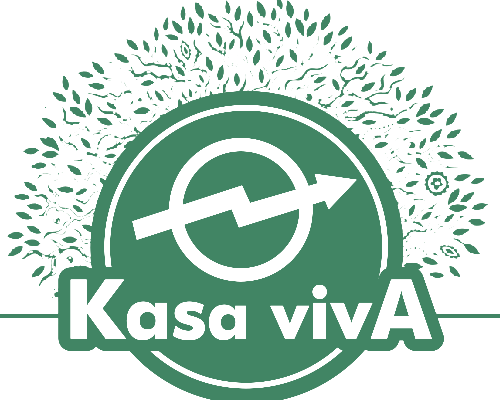

Nós somos o Okupa Kasa Viva!
Se morar é um direito okupar é um dever! Partindo desse pensamento, a okupa é um assentamento humano que recupera construções abandonadas trazendo de volta a vida ao local, reorganizando seus moradores com base na solidariedade e luta por direitos intrinsecamente ligados ao direito a vida, okupar assim com “k” é um atitude política se identificando culturalmente como escola livre, um lugar onde se pode aprender a todo o tempo com diversas atividades direcionadas a compreensão e conquistas da equidade social.
Okupa Kasa vivA
Estágios do Okupa:
Reestruturação da Kasa vivA: parte 1.
Inicio dos Projetos
Integração com a Comunidade Local
Abaixo segue as imagens de alguns de nossos projetos.
Adoraremos ler uma mensagem sua!
Venha tomar uma xícara de conosco, ou nos mande uma mensagem.
